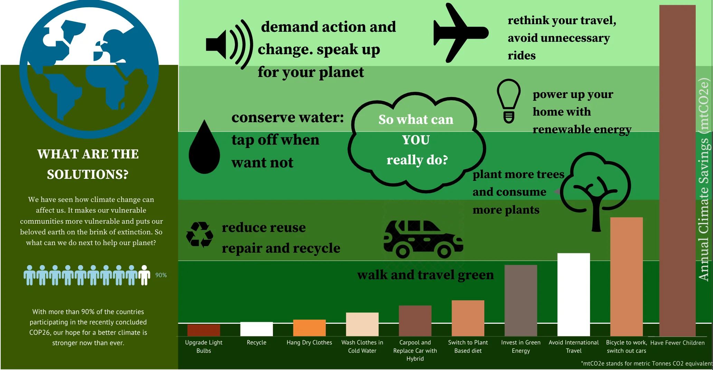

Quá trình biến đổi khí hậu tại Việt Nam và thế giới.
Khí hậu trái đất đã thay đổi trong suốt lịch sử. Chỉ
trong vòng 650.000 năm qua đã có bảy chu kỳ băng hà
tiến lên và rút lui, với sự kết thúc đột ngột của kỷ
băng hà cuối cùng cách đây khoảng 11.700 năm đánh
dấu sự khởi đầu của kỷ nguyên khí hậu hiện đại — và
của nền văn minh nhân loại.
Hầu hết những biến đổi khí hậu này là do những thay
đổi rất nhỏ trong quỹ đạo của Trái đất làm thay đổi
lượng năng lượng mặt trời mà hành tinh của chúng ta
nhận được. Xu hướng nóng lên hiện nay có ý nghĩa đặc
biệt bởi vì nó rõ ràng là kết quả của hoạt động của
con người kể từ giữa thế kỷ 20 và diễn ra với tốc độ
chưa từng có trong hàng thiên niên kỷ. Không thể phủ
nhận rằng các hoạt động của con người đã làm ấm bầu
khí quyển, đại dương và đất liền và những thay đổi
nhanh chóng và lan rộng trong khí quyển, đại dương,
băng quyển và sinh quyển đã xảy ra.
Biểu đồ bên dưới cho thấy sự biến động nhiệt độ
của một quốc gia kể từ giai đoạn 1825 - 2014.
Gồm 2 trục tung °C (độ chia 2) và trục hoành là
năm với độ chia 1 năm. Chọn quốc gia cần hiển
thị nhiệt độ trung bình tại Filter country. Giá
trị cụ thể được hiển thị khi di chuyển chuột đến
vị trí đó (Ví dụ: 1825 nhiệt độ là 23.611)

Tại Việt Nam: Từ 1825-2014 nhiệt độ
trung bình tương đối ổn định theo chu kì 5
năm,khoảng từ 22°C. Mức nhiệt này nằm trong
tiêu chuẩn nền nhiệt của khí hậu nhiệt đới
2014 nhiệt độ đạt mức cao nhất 25°C. Từ
1861-1862 có sự giảm mạnh, nhiệt độ trung
bình từ 23°C thấp xuống khoảng 18°C và 1864
dao động ổn định trờ lại.
Dự đoán:
- Xét về xu hướng: nhiệt độ trung bình các quốc gia đều tăng theo thời gian
- Xét về hồi quy, nhiệt độ sẽ tăng khoảng 0.8°C và giảm khoảng 0.4°C mỗi chu kì 5 năm tiếp theo

Biểu đồ cây thể hiện nhiệt độ trung bình của các
thành phố theo quốc gia trong 1 năm.
Sự phân bố nhiệt độ trung bình của các thành phố
thể hiện trong sơ đồ cây. So sánh các thực thể
(chẳng hạn như quốc gia hoặc khu vực) trong mối
quan hệ với các thực thể khác Ở đây các quốc gia
được trình bày dưới dạng hình chữ nhật và được
tô màu theo khu vực. Kích thước của mỗi hình chữ
nhật tương ứng với nhiệt độ trung bình từ năm
1900 đến năm 2011. Các thành phố có nhiệt độ cao
nhất có màu cam đỏ và các thành phố có nhiệt độ
thấp hơn có màu cam nhạt hơn. Tất cả dữ liệu này
cũng có thể được khám phá theo quốc gia và theo
thời gian trong bản đồ tương tác. Bằng cách nhấp
vào bất kỳ quốc gia nào, bạn có thể xem nhiệt độ
trung bình các thành phố quốc gia đó theo thời
gian và so sánh với các quốc gia khác.
Tại Việt Nam: Các tỉnh vùng Đông Nam Bộ
có nhiệt độ trung bình cao nhất cả nước, các
tỉnh miền trung thấp hơn. Nhiệt độ trung bình
năm từ 22°C - 28°C. Cần Thơ có mức nhiệt cao
nhất khoảng 28°C, Hà Nội và Đà Lạt có mức nhiệt
thấp nhất, khoảng 21°C. Các phố miền Bắc có
nhiệt độ trung bình thấp nhất cho thấy xu hướng
càng gần về xích đạo, nhiệt độ càng cao.
Dự đoán:
Nhìn chung, nhiệt độ ở các thành phố tăng theo
từng năm, các tỉnh miền Nam sẽ có nhiệt độ trung
bình cao hơn các tỉnh miền Bắc khoảng 2-4°C.

Biểu đồ giúp chúng ta nhìn thấy rõ xu hướng nhiệt độ theo từng tháng trong năm, cụ thể:
- Nhiệt độ năm hiện tại là đường cam, trong khi nhiệt độ năm được so sánh có màu xanh nhạt. Khi di chuyển chuột đến vị trí sẽ hiển thị cụ thể nhiệt độ của tháng
- Average Temperature: Nhiệt độ trung bình trong năm giúp đánh giá sự biến đổi nhiệt độ và so sánh với năm khác
- Land Temperature: Biểu đồ nhiệt độ trung bình trên đất liền(mức độ nóng của mặt đất khi chạm vào) theo tháng.
- Land and Ocean Temperature: chỉ ra mối liên hệ giữa nhiệt độ lên đất liền và đại dương, có thể so sánh với nhiệt độ trên đất liền ở trên để thấy được sự tăng về nhiệt độ mặt nước biển ảnh hưởng như thế nào đến sự tăng nhiệt độ trên đất liền
- Con số phần trăm tăng giảm nhiệt độ là dữ liệu quan trọng để chỉ báo sự thay đổi trong về nhiệt độ trung bình khi so sánh với năm khác, nhằm dự đoán và khắc phục các vấn đề môi trường
- Nhiệt độ cao nhất và thấp nhất trên đất liền đề cập đến nhiệt độ ghi nhận cao nhất và thấp nhất tại một địa điểm trên mặt đất, nhằm hiểu rõ hơn về biên độ nhiệt độ và biến đổi thời tiết tại một địa điểm cụ thể.
Ngoài ra so sánh nhiệt độ cao nhất và thấp
nhất có thể cho thấy mức độ biến đổi của
nhiệt độ theo năm, hoặc thậm chí những biến
đổi theo các khu vực.
Tại Việt Nam:
So sánh giữa năm 2011 Nhiệt độ trung bình khoảng
23°C, thấp hơn 4.59% so với 2010. Mùa khô thường
kéo dài từ tháng 4 đến tháng 10, với nhiệt độ
cao trung bình hàng tháng trên 24,5°C. Tháng
nóng nhất trong năm là Tháng 6 và tháng 7, với
nhiệt độ cao trung bình là 27°C. Mùa mưa kéo dài
từ tháng 11 đến tháng 3, với nhiệt độ cao trung
bình dưới 23°C. Tháng lạnh nhất trong năm là
tháng 1, với nhiệt độ thấp trung bình khoảng
19°C.

Trong lược đồ trên, các điểm trên đồ thị biểu thị nhiệt độ trung bình năm của các thành phố khác nhau.
Biểu đồ bản đồ cung cấp cái nhìn tổng quan về sự phân bố nhiệt độ trung bình theo địa lý, có thể nhận thấy mối liên quan giữa nhiệt độ và vị trí địa lý, Ví dụ như các thành phố ven biển thường có nhiệt độ cao hơn so với các thành phố nội địa.
Di chuyển chuột đến các plot của thành phố giúp người xem hiểu rõ hơn về xem thông tin chi tiết về thành phố và nhiệt độ trung bình.

Phân bố nhiệt độ: Biểu đồ nhiệt giúp chúng ta thấy sự khác biệt nhiệt độ giữa các bang thuộc cùng một quốc gia. Các vùng có màu sắc nóng hơn thường biểu thị nhiệt độ cao hơn, trong khi các vùng có màu sắc lạnh hơn biểu thị nhiệt độ thấp hơn, cho thấy sự khác biệt về nhiệt độ giữa các bang và định rõ những vùng có nhiệt độ cao và thấp.
Thay đổi theo thời gian: Bằng cách theo dõi biểu đồ nhiệt theo năm, chúng ta có thể nhận ra sự biến đổi nhiệt độ của các bang theo thời gian. Nhận xét này giúp chúng ta nhận thức về xu hướng tăng/giảm nhiệt độ trong suốt các năm, các năm nào có nhiệt độ cao nhất hoặc thấp nhất, và sự biến đổi mùa đối với nhiệt độ.
So sánh giữa các bang: Biểu đồ nhiệt giúp chúng ta so sánh nhiệt độ giữa các bang một cách trực quan. Nhìn vào biểu đồ, chúng ta có thể so sánh mức độ nhiệt độ cao hoặc thấp giữa các bang và nhận thấy sự khác biệt đáng kể. Điều này có thể giúp chúng ta nhận ra những bang có nhiệt độ cao hơn hoặc thấp hơn so với các bang khác.

Dashboard
BIẾN ĐỔI KHÍ HẬU LÀ CÓ THẬT!
Có quá muộn để ngăn chặn biến đổi khí hậu?
Biến đổi khí hậu là một trong những vấn đề phức tạp nhất mà chúng ta phải đối mặt ngày nay. Nó liên quan đến nhiều khía cạnh - khoa học, kinh tế, xã hội, chính trị và các câu hỏi về đạo đức và luân lý - và là một vấn đề toàn cầu, ở quy mô địa phương, sẽ tồn tại trong nhiều thập kỷ và thế kỷ tới. Carbon dioxide, loại khí nhà kính giữ nhiệt đã thúc đẩy sự nóng lên toàn cầu gần đây, tồn tại trong bầu khí quyển hàng trăm năm và hành tinh (đặc biệt là các đại dương) phải mất một thời gian để phản ứng với sự nóng lên. Vì vậy, ngay cả khi chúng ta ngừng phát thải tất cả khí nhà kính ngày hôm nay, sự nóng lên toàn cầu và biến đổi khí hậu sẽ tiếp tục ảnh hưởng đến các thế hệ tương lai.
Vậy bạn có thể làm gì để giảm biến đổi khí hậu?
